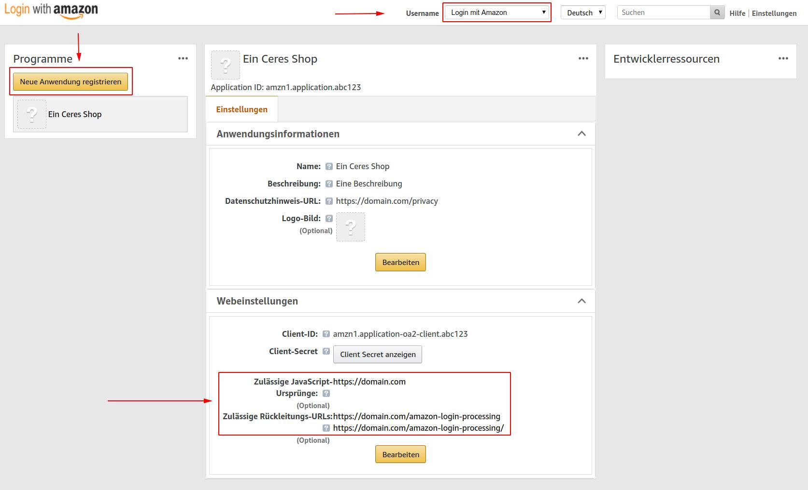
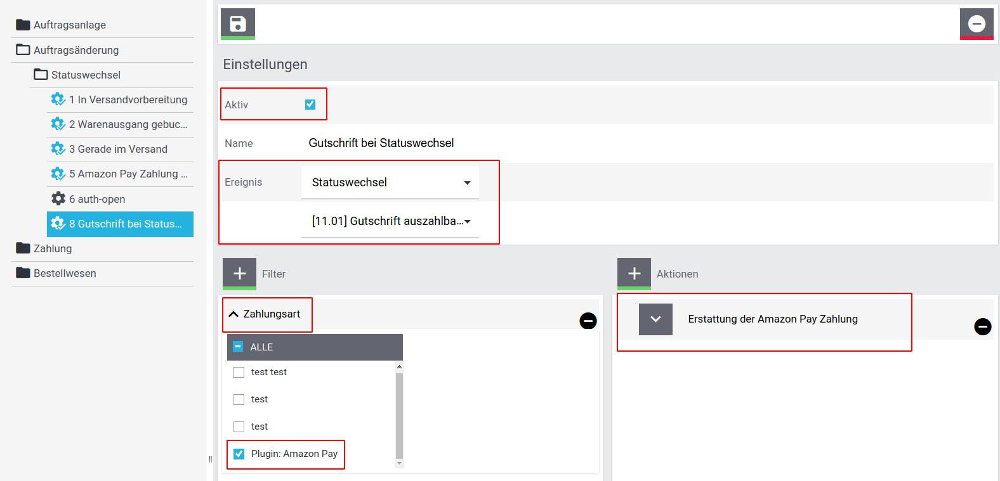
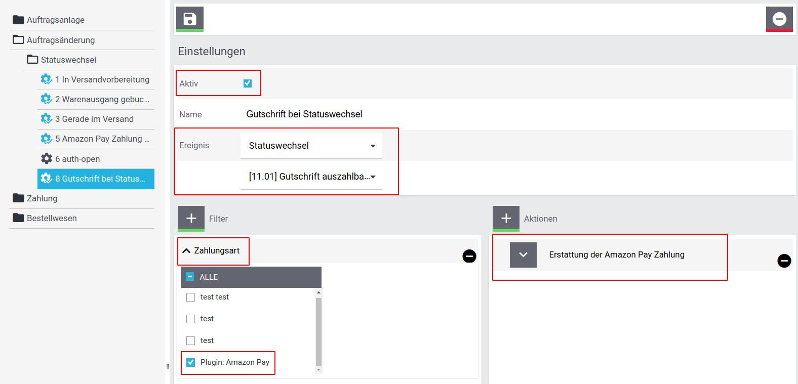

Hinweis
Wenn du aktuell Probleme mit diesem Fehler hast, beachte bitte Punkt 7.5
1. Überblick Zahlungsablauf
Für die Einrichtung des Amazon Pay Plugins für plentymarkets ist es wichtig, zu verstehen, dass sich der
Zahlungsablauf in einem Detail etwas anders verhält als bei herkömmlichen Zahlungsanbietern.
Statt eines direkten Zahlungseinzugs findet vorerst eine Autorisierung statt, die für dich als Händler eine
Zahlungsgarantie bedeutet. Der eigentliche Zahlungseinzug ist ein eigener Schritt, der normalerweise bei
Versand
der Ware ausgelöst werden sollte.
Umfangreiche Informationen findest du auf der Website von Amazon Pay.
Das Plugin selbst bietet in deinem Shop eine eigene Checkout-Seite an, auf der der Kunde aus seinen bei Amazon hinterlegten Zahlungsarten und Versandadressen wählen kann.
Umfangreiche Informationen findest du auf der Website von Amazon Pay.
Das Plugin selbst bietet in deinem Shop eine eigene Checkout-Seite an, auf der der Kunde aus seinen bei Amazon hinterlegten Zahlungsarten und Versandadressen wählen kann.
2. Plugin-Setup
2.1 Plugin-Installation
Du erhältst das Amazon Pay Plugin für plentymarkets am einfachsten direkt im plentyMarketplace.
Weitere Informationen zur Installation von Marketplace Plugins gibt es auch in den FAQs.
Für versierte Anwender steht natürlich auch die Einbindung über unser GitHub Repository zur Verfügung.
Bitte denke wie bei allen Plugins daran, dass du es im richtigen Set für den jeweiligen Mandaten aktivierst und bereitstellst.
Außerdem muss das Plugin unbedingt im Plugin-Set des Hauptmandanten installiert werden.
Für versierte Anwender steht natürlich auch die Einbindung über unser GitHub Repository zur Verfügung.
Bitte denke wie bei allen Plugins daran, dass du es im richtigen Set für den jeweiligen Mandaten aktivierst und bereitstellst.
Außerdem muss das Plugin unbedingt im Plugin-Set des Hauptmandanten installiert werden.
2.2 Amazon Pay Account anlegen
Wenn du noch keinen Amazon-Pay Account hast, kannst du dich hier registrieren.
2.3 Einrichtung in Sellercentral und Zugangsdaten
2.3.1 "Login mit Amazon"-Einstellungen
Wechsle hierfür zu den Einstellungen für den "Login mit Amazon" (https://sellercentral.amazon.de/hz/home):
Auf der Einstellungsseite für den Login mit Amazon musst du eine neue Anwendung registrieren. Fülle dann die vorhandenen Felder entsprechend deinen Anforderungen aus. Zwei Angaben sind für die Integration mit plentymarkets obligatorisch, nämlich "Zulässige JavaScript-Ursprünge" und "Zulässige Rückleitungs-URLs". Diese sind entsprechend des folgenden Screenshots auszufüllen. Ersetze dafür www.domain.com mit deiner Shop-Domain:
Auf der Einstellungsseite für den Login mit Amazon musst du eine neue Anwendung registrieren. Fülle dann die vorhandenen Felder entsprechend deinen Anforderungen aus. Zwei Angaben sind für die Integration mit plentymarkets obligatorisch, nämlich "Zulässige JavaScript-Ursprünge" und "Zulässige Rückleitungs-URLs". Diese sind entsprechend des folgenden Screenshots auszufüllen. Ersetze dafür www.domain.com mit deiner Shop-Domain:
Zulässige JavaScript-Ursprünge: https://www.domain.com/
Zulässige Rückleitungs-URLs: https://www.domain.com/amazon-login-processing/ und https://www.domain.com/amazon-login-processing (bitte mit und ohne den Slash am Ende, um Fehler bei veränderter Shop-Konfiguration zu vermeiden)

Weitere Hilfe dazu erhalten Sie in diesem Dokument von Amazon.
2.3.2 MWS Zugangsdaten
Wähle aus der Dropdown-Liste Amazon Pay aus.
Erzeuge danach unter Integration » MWS Access Key deine MWS Zugangsdaten.
Erzeuge danach unter Integration » MWS Access Key deine MWS Zugangsdaten.
2.3.3 IPN (Sofortbenachrichtigung)
Die Einrichtung der IPN (Instant Payment Notification = Sofortbenachrichtigung) ermöglicht es, dass dein
plentymarkets-System in Echtzeit über Statusänderungen einer Zahlung informiert wird.
Wähle dazu den Menüpunkt Einstellungen » Integrationseinstellungen und hinterlege bei
"Händler-URL"
https://www.domain.com/amazon-ipn/ (www.domain.com bitte durch deine Shop-Domain ersetzen)

2.3.4 Zugangsdaten im plentymarkets-Plugin hinterlegen
Nachdem zu alles konfiguriert hast, findest du deine Zugangsdaten unter Integration » MWS Access
Key.
Diese sind entsprechend in die Plugin-Konfiguration zu kopieren. Bitte achte dabei darauf, dass du nicht
versehentlich Leerzeichen am Anfang oder Ende mit kopierst.

2.4 Weitere Plugin-Konfiguration
Die weiteren Konfigurationsmöglichkeiten im plentymarkets-Plugin ermöglichen dir, das Verhalten des Plugins
an
deine Prozesse anzupassen.
2.4.1 Grundeinstellungen
- Status
- Erlaubt es, das Plugin vorübergehend zu deaktivieren
- Sandbox
- Schaltet das Plugin in den Sandbox-Modus. Dabei werden keine echten Zahlungen ausgelöst. Bitte beachte, dass es für den Sandbox-Modus in Sellercentral eigene Konfigurationsmöglichkeiten gibt und du zum Testen keine echten Amazon-Accounts verwenden kannst, sondern dir einen eigenen Testaccount in Sellercentral anlegen musst.
- Buttons verstecken (debug)
- Versteckt die Buttons im Frontend mit CSS (display:none), sodass du im Frontend testen kannst, ohne dass deine Kunden beeinträchtigt werden.
- Wenn möglich Amazon-Login im Popup
- Das Amazon-Login-Formular kann entweder in einem Popup präsentiert werden oder per Weiterleitung mit anschließender Rückleitung in deinen Shop.
- Art der Autorisierung
-
Hiermit kannst du einstellen, wann die Autorisierung der Zahlung durchgeführt werden soll. Wenn du keine
besonderen Anforderungen hast, solltest du es hier bei der Standard-Einstellung belassen. (siehe hierzu
auch 1. und 3.1)
Bei Auswahl der Standard-Einstellung versucht das Plugin, die Zahlung bereits während des Checkouts zu autorisieren, um den Kunden im Fall einer eindeutigen Ablehnung zur Auswahl einer anderen Zahlungsart zu bewegen. In Ausnahmefällen kann es sein, dass die Autorisierungsanfrage nicht eindeutig beantwortet werden kann. Dann wird die Bestellung trotzdem abgeschlossen und das Autorisierungsergebnis nachgereicht. - Art des Zahlungseinzugs
-
Hiermit kannst du einstellen, wann der Zahlungseinzug durchgeführt werden soll. In den allermeisten
Fällen ist
der Einzug per Ereignisaktion zum Zeitpunkt des Versands die beste Möglichkeit (siehe 3.2).
Bei Download-Produkten empfiehlt sich der Einzug direkt nach Autorisierung. - Auftragsstatus nach erfolgreicher Autorisierung
- Hier kannst du eine Status-ID hinterlegen (z.B. 5.0). Diese wird nach erfolgreicher Autorisierung gesetzt, um zu signalisieren, dass die Ware versendet werden kann.
- Auftragsstatus bei Ablehnung des Zahlungsmittels, Kundenaktion notwendig (vorläufig abgelehnte Zahlungen)
- Hier kannst du eine Status-ID hinterlegen (z.B. 3.x). Diese wird nach Ablehnung des Zahlungsmittels gesetzt, um zu signalisieren, dass eine Aktion zur Problemlösung notwendig ist. Der Kunde kann z.B. durch Auswahl eines anderen Zahlungsmittels bei Amazon den Auftrag noch nachträglich bezahlen. (siehe hierzu auch 4.)
- Auftragsstatus bei vollständiger Ablehnung der Zahlung mit Amazon Pay (endgültig abgelehnte Zahlungen)
- Hier kannst du eine Status-ID hinterlegen (z.B. 3.x). Diese wird bei vollständiger Ablehnung der Zahlung gesetzt. In diesem Fall solltest du Kontakt mit dem Kunden aufnehmen, um einen alternativen Zahlungsweg z.B. per Überweisung anzubieten. (siehe hierzu auch 4.)
- Amazon Pay Vorgang bei komplettem Zahlungseinzug abschließen
- Wenn diese Einstellung aktiviert ist, wird der Zahlungsvorgang nach Zahlungseinzug geschlossen. Nach dem Schließen sind keine weiteren Abbuchungen mehr möglich.
- E-Mail-Adresse für Versandadresse verwenden
- Wenn diese Einstellung aktiviert ist, wird die E-Mail-Adresse des Kunden in die Versandadresse aufgenommen (z.B. zur Übergabe an Paketdienste)
2.4.2 Style
Hier kannst du Einstellungen zum Aussehen der Amazon-Buttons treffen.
3. Ereignisaktionen
Bei den Ereignisaktionen wird die Plugin-Konfiguration des Hauptmandanten geladen. Bitte trage die unter
2.3.4 verwendeten Zugangsdaten deshalb auch im Plugin-Set des Hauptmandanten ein.
3.1 Amazon Pay Zahlung autorisieren
Diese Ereignisaktionen wird für den normalen Workflow nicht gebraucht und ist nur dann relevant, wenn
ungewöhnliche
Prozesse eine Autorisierung zu einem bestimmten Zeitpunkt erfordern, z.B. bei langfristigen
Vorbestellungen.
Unter normalen Umständen sollte in der Plugin-Konfiguration die Autorisierung "während des Checkouts" gewählt werden.
Unter normalen Umständen sollte in der Plugin-Konfiguration die Autorisierung "während des Checkouts" gewählt werden.
3.2 Vollständiger Einzug der Amazon Pay Zahlung
Diese Ereignisaktion muss unbedingt eingerichtet werden, damit die Zahlung auch tatsächlich eingezogen
wird.
Sinnvoll ist eine Kopplung an den Versand, also z.B. an den Statuswechsel auf "[7] Warenausgang gebucht".
Das könnte z. B. so aussehen:
Das könnte z. B. so aussehen:
3.3 Amazon Pay Vorgang schließen
Wenn du in der Plugin-Konfiguration nicht "Amazon Pay Vorgang bei komplettem Zahlungseinzug abschließen"
gewählt hast, solltest du diese Ereignisaktion einrichten, um dem Kunden zu signalisieren, dass du alle
Zahlungsvorgänge
ausgeführt hast und er keine weiteren Zahlungseinzüge zu erwarten hat.
3.4 Erstattung der Amazon Pay Zahlung
Um dem Kunden seine Zahlung im Fall einer Gutschrift zu erstatten, z.B. bei einer Retoure, solltest du
diese
Ereignisaktion z.B. bei dem Ereignis "Neue Gutschrift" oder auch für den Statuswechsel einer Gutschrift einrichten. Die Aktion veranlasst eine Rückzahlung in
Höhe der Gutschrift, die du angelegt hast.
Das könnte z. B. so aussehen:

Das könnte z. B. so aussehen:


4. E-Mails
Da es passieren kann, dass Zahlungen des Kunden nach dem Abschluss des Checkout-Vorgangs abgelehnt werden,
solltest
du den Kunden darüber informieren. Dazu kannst du eine "E-Mail versenden"-Ereignisaktion an den
Auftragsstatus
koppeln, den du in der Plugin-Konfiguration unter "Auftragsstatus bei Ablehnung des Zahlungsmittels,
Kundenaktion
notwendig (vorläufig abgelehnte Zahlungen)" bzw. "Auftragsstatus bei vollständiger Ablehnung der Zahlung mit
Amazon
Pay (endgültig abgelehnte Zahlungen)" gesetzt hast.
5. Content Container
Damit das Plugin im Frontend deines Shops erscheint, musst du in deinem plentymarkets Backend unter CMS » Container-Verknüpfungen folgende Zuordnungen vornehmen:
Amazon Login & Pay - Checkout-Button (empfohlen)
Hinweis:
Dieser Content erzeugt den Button, der den Kunden zum Amazon Checkout weiterleitet.
Grundsätzlich kannst du ihn überall platzieren, wo er dir sinnvoll erscheint. Die folgende Liste
gibt Vorschläge, aber insbesondere, ob du ihn bei "Shopping cart" und "Shopping cart preview"
eher vor oder nach dem normalen Checkout-Button anzeigen möchtest, ist natürlich dir überlassen
✓ Shopping cart: After "Checkout" button✓ Shopping cart overlay: Extend buttons
✓ Shopping cart preview: After "Checkout" button
✓ Checkout: After payment method
Amazon Login & Pay - Checkout-Button auf Artikelseite (empfohlen)
✓ Single item: After "Add to shopping cart" button
Amazon Login & Pay - Login-Button (empfohlen)
✓ Login overlay: Container in a row with the buttons
✓ Registration overlay: Container in a row with the buttons
✓ Registration overlay: Container in a row with the buttons
Amazon Login & Pay - Zahlungshinweis auf Bestätigungsseite (Pflicht)
✓ Order confirmation: Additional payment information
Amazon Login & Pay - JavaScript (Pflicht)
✓ Script loader: After scripts loaded
Amazon Login & Pay - Logo (optional)
Dieser Container zeigt das Amazon-Pay Logo. Du kannst ihn nutzen, um das Logo in deinem Shop
anzuzeigen.
6. Loslegen
Damit sollte alles erledigt sein, um deinen Kunden ein reibungsloses Amazon Pay Einkaufserlebnis zu
bieten.
Wenn du Fragen, Probleme oder Anregungen hast, kontaktiere uns am besten im plentymarkets Forum in dieser Kategorie.
Wenn du Fragen, Probleme oder Anregungen hast, kontaktiere uns am besten im plentymarkets Forum in dieser Kategorie.
7. Häufige Fehler
7.1 {"error":{"message":"Internal Server error"}} bei Checkout
Dieser Fehler kann zwei mögliche Ursachen haben. Bitte prüfe als erstes, ob du wirklich alle
Zugangsdaten
korrekt kopiert hast (siehe 2.3.4). Wenn du wirklich sicher bist, dass
hier alles
korrekt ist, stelle bitte sicher, dass dein Amazon Pay Account eine UST-Id enthält. Diese ist
notwendig,
damit du die Rechnungsadresse des Kunden erhältst, die für den Checkout benötigt wird.
7.2 Dem Auftrag wird eine andere Zahlungsart zugeordnet
In diesem Fall hast du wahrscheinlich die Zahlungsart "Amazon Pay" nicht für die betreffende Kundenklasse freigeschaltet und solltest dies nachholen.
7.3 "Die gewählte Zahlungsweise ist für diesen Einkauf nicht verfügbar. Wählen Sie eine andere Zahlungsweise"
Wenn diese Fehlermeldung von Amazon zurückgegeben wird, hast du vermutlich die Einstellugen unter 2.3.1 nicht richtig vorgenommen. Bitte überprüfe diese noch einmal.
7.4 Ereignisaktionen funktionieren nicht, obwohl sie ausgelöst wurden
Bitte überprüfe, ob du die Amazon Pay Zugangsdaten auch im Plugin-Set des Hauptmandanten eingetragen hast. Dieses wird in Ereignisaktionen geladen.
7.5 "We have noticed that you've been inactive for a while. For safety reasons, we have signed you out."
Dieser Fehler kommt von blockierten Cookies. Bitte überprüfe die EInstellungen in Ceres und eventuellen Cookie-Plugins. Insbesondere in Ceres muss die Einstellung "Nicht akzeptierte Cookies blockieren" unbedingt deaktiviert werden.
Wenn du zusätzlich das Cookie Bar Plugin nutzt, ist auch dort in den Einstellungen unter Allgemeines die Checkbox "Nicht registrierte Cookies blockieren" zu deaktivieren.
Wenn du zusätzlich das Cookie Bar Plugin nutzt, ist auch dort in den Einstellungen unter Allgemeines die Checkbox "Nicht registrierte Cookies blockieren" zu deaktivieren.
8. FAQ
Warum werden Aufträge nicht als "bezahlt" markiert, wenn ein Kunde mit Amazon Pay kauft?
Beim normalen Betrieb von Amazon Pay findet während des Checkouts eine Authorisierung des entsprechenden Betrags statt, d.h. du bekommst von Amazon eine Zahlungsgarantie, aber es ist noch kein Geld geflossen. Deshalb können wir den Auftrag auch nicht als bezahlt markieren, ohne dass die Gefahr besteht, dass du später nicht merkst, wenn tatsächlich ein Zahlungseinzug nicht stattgefunden haben sollte.
Warum sind die Adressfelder manchmal falsch befüllt? (z.B. Straße als Firmenname)
Die Adresse (einschließlich Firmenname) wird von Amazon ohne explizite Kennzeichnung in bis zu 3 Zeilen aufgeteilt. Das Plugin teilt diese nach Best Practice in die Adressfelder von plentymarkets auf, kann aber leider keine 100%ige Zuordnung garantieren.
Impressum
Verantwortlich für die Inhalte dieser Webseite gemäß § 6 Teledienstgesetz (tdg): Fa. alkim media • Inhaber: Frau Thekla Alkim • Perleberger Straße 62b • 16866 Kyritz • E-Mail: info@alkim.de • Telefon: 033971-604480 • Telefax: 033971-32263
Verantwortlich für die Inhalte dieser Webseite gemäß § 6 Teledienstgesetz (tdg): Fa. alkim media • Inhaber: Frau Thekla Alkim • Perleberger Straße 62b • 16866 Kyritz • E-Mail: info@alkim.de • Telefon: 033971-604480 • Telefax: 033971-32263